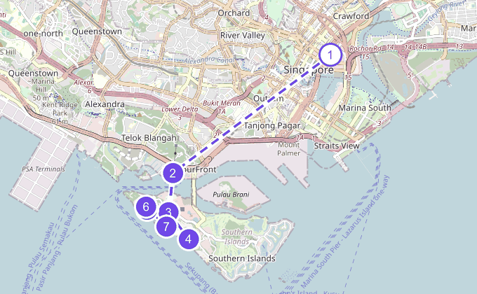
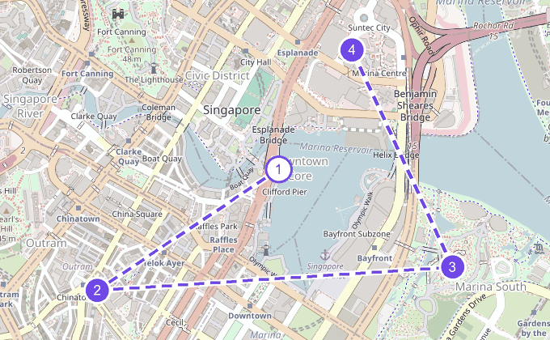
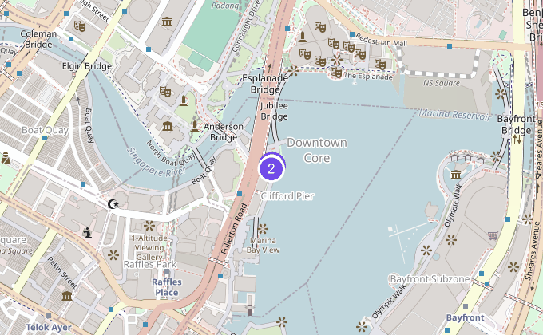
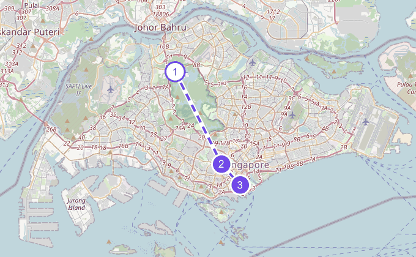
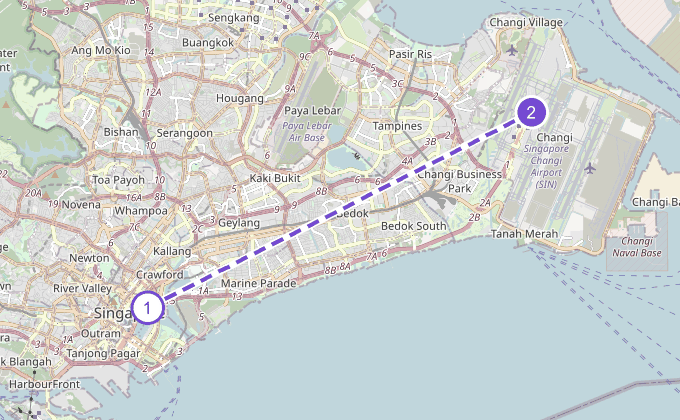

13:00
한국 시각
인천공항 T1 도착, 탑승 수속
항공사와 터미널을 예약 문자에서 한 번 더 확인하세요.
항공사와 터미널이 아직 확정되지 않았어요.
우리 가족 여행 가이드
2026년 8월 2일 – 8일 · 성인 2, 유아 1
시차
한국보다 1시간 느려요. 한국 오후 1시가 싱가포르 낮 12시예요.
전압·플러그
230V에 영국식 3핀(BF) 콘센트라 멀티 어댑터가 필요해요.
비상 연락
경찰은 999, 구급과 소방은 995예요. 주싱가포르 한국대사관은 +65 6256 1188이고, 근무시간 외 긴급 전화는 +65 9654 3528이에요.
수돗물
수돗물은 그냥 마셔도 돼요. 그래도 아이 물은 편의점 생수가 마음 편해요.
계산 문화
음식점 영수증엔 봉사료 10%와 세금 9%가 이미 붙어 나와요. 따로 팁은 없어요.
결제
카드가 거의 다 되고, 호커센터는 현금이나 페이나우가 편해요. 그랩 앱에 카드를 미리 등록해 두세요.
팬 퍼시픽 싱가포르 (Pan Pacific Singapore)
7 Raffles Boulevard, Marina Square, Singapore 지도 보기
8월 2일 체크인 · 8월 7일 체크아웃 (5박)
8월 4일과 5일은 가이드와 차량이 함께해요. 계약 시간에 밤 9시 일정까지 포함되는지 미리 확인해 주세요.
이 날은 장소가 등록된 일정이 없어 지도가 없어요. 시간표에서 일정을 확인하세요.
정해지면 이 가이드와 캘린더가 함께 갱신돼요.
이동하는 날
밤에 도착하는 날이에요. 무리하지 않는 게 목표입니다.
항공사와 터미널을 예약 문자에서 한 번 더 확인하세요.
항공사와 터미널이 아직 확정되지 않았어요.
SG 입국카드를 미리 제출했는지 확인하세요.
싱가포르는 한국보다 1시간 느려요.
공항에서 호텔까지는 프라이빗 택시를 예약해뒀어요.
센토사
더위를 피하면서 저녁 7시 40분 공연 시간을 지키는 날이에요. 한낮 2~5시는 실내 위주로 움직입니다.

아침 6시 반부터 10시 반까지 해요. 주문 마감은 10시 15분이에요.
호텔에서 실내 통로로 걸어갈 수 있어요. 줄이 길 수 있으니 11시 15분쯤 도착하면 편해요.
예산
S$55~70
셋이 배불리 먹는 기준이에요. 봉사료 10%와 세금 9%가 계산서에 붙어요 · 약 6만 5천~8만 원
주문 방법
자리에 앉아 테이블의 QR코드로 주문하고, 계산은 나갈 때 카운터에서 해요. 물이 따로 나오지 않으니 물통을 챙겨 가면 좋아요.
예약과 웨이팅
입구에서 QR로 인원을 등록하면 인원수별로 줄을 세워요. 11시 15분쯤 도착하면 길어야 15분 안에 들어간다는 후기가 대부분이에요. 자리 안내를 받을 때 아기의자를 요청하면 아기용 그릇과 스푼까지 챙겨 줘요.
20분쯤 걸려요. 케이블카 타는 곳은 하버프론트 타워2예요.
케이블카 왕복권을 예매했는지 확인하세요.
공중에서 바다를 건너 들어가는 코스예요.
예매 팁
왕복권 한 장으로 본섬 노선과 센토사 안 노선까지 다 탈 수 있고, 편도표는 팔지 않아요. 클룩이나 마이리얼트립 같은 한국 예매 채널에서는 공식 온라인 예매보다 둘이 만 원 가까이 더 아껴요.
타는 곳
하버프론트 타워2의 15층이 탑승장이에요. 지하철 하버프론트역 B출구에서 케이블카 표지판만 따라가면 돼요. 예매해 뒀다면 표 교환 없이 탑승구에서 QR을 찍고 바로 타요.
아이와 함께
네 살 미만은 무료예요. 유모차는 접지 않고 그대로 밀고 타면 되고, 역마다 엘리베이터가 있어요.
실전 팁
저녁 7시 45분부터는 그룹마다 UV 손전등을 나눠줘요. 캐빈 안 숨은 그림을 비춰 보는 재미가 있어서 돌아오는 밤 코스가 심심하지 않아요.
하루 중 제일 더운 시간이라 실내와 카페 위주로 천천히 보내요.
비치 셔틀이 10분에서 15분 간격으로 다녀요. 무료예요.
팔라완에서 걸어서 15분쯤이에요.
트라피자 예약을 확인하세요.
실로소 비치의 야외 피자집이에요. 공연장까지 걸어갈 수 있어서 골랐어요.
예산
S$100~120
피자와 파스타에 키즈메뉴, 맥주 한 잔에 봉사료와 세금까지 더한 값이에요. 생맥주 한 잔이 19달러로 꽤 비싼 편이에요 · 약 11만 5천~14만 원
아이와 함께
주문은 자리의 QR코드로 하는데, 화덕 피자가 나오기까지 시간이 좀 걸려요. 식탁 바로 앞이 모래사장이라 아이가 놀면서 기다리기 좋아요. 키즈메뉴판에 색칠 그림이 있으니 색연필을 챙기면 더 좋아요.
자리 잡기
해변 바로 앞 명당은 예약자에게 먼저 돌아가요. 저녁 6시면 아직 더우니 실내나 그늘 자리에서 시작하고, 해질 무렵 노을은 해변에 나가서 봐도 충분해요.
프리미엄석 예매를 확인하고, 7시 25분까지는 자리에 앉으세요.
바다 위에서 펼쳐지는 20분짜리 쇼예요. 자리가 선착순이라 15분 전에는 도착하는 게 좋아요.
예매 팁
클룩에서 샀다면 바우처의 예약 코드를 공식 예약 페이지에 넣어 회차를 지정해야 표가 완성돼요.
타는 곳
프리미엄석 입장은 3번 게이트예요. 비치스테이션 출구로 나오면 광장 바로 앞이에요. 5번 게이트는 일반석 줄이니 티켓의 게이트 번호부터 확인하세요.
자리 잡기
자리는 같은 등급 안에서 선착순이에요. 7시 10분쯤 문이 열릴 때 들어가 중앙 중간쯤에 앉는 게 좋아요. 맨 앞줄은 물이 튀고 불꽃 열기도 세서 아이랑은 피하는 게 나아요.
아이와 함께
네 살 미만은 표 없이 무릎에 앉혀 무료로 볼 수 있어요. 불꽃 소리가 꽤 커서 아이가 놀라면 귀를 막아 줄 준비를 해 두세요.
공연장에서 케이블카역까지 25~40분 걸리는 구간이에요. 여유 있게 움직이세요.
마지막 탑승이 9시 반이니 시간만 지키면 여유 있어요.
9시 반에서 45분쯤 호텔 도착 예정이에요.
마리나베이 — 가이드와 함께
가이드와 차량이 함께하는 날이에요. 가든스 바이 더 베이는 오후 4시에 한 번만 가서, 돔과 야간 쇼를 이어서 봅니다. 저녁은 돔을 나와서 슈퍼트리 쇼가 시작되기 전에 가든스 안 사테 꼬치집에서 해결해요.

가이드 계약 시간을 확인하세요. 밤 9시 종료 일정까지 포함되는지가 중요해요.
야외 명소는 오전이 가장 시원해요.
더숍스와 에스플러네이드를 차창으로 둘러봐요.
더위와 줄을 피하려면 12시 전에 도착하는 게 좋아요. 가이드에게 미리 말해두세요.
티엔티엔 치킨라이스가 유명한 호커센터예요. 화요일은 정상 영업해요.
예산
S$25~30
셋이 배불리 먹고 음료까지 마셔도 이 정도예요. 호커센터라 봉사료와 세금이 붙지 않아요 · 약 3만~3만 5천 원
주문 방법
파란 간판 매장 옆으로 줄을 서서 카운터에서 주문하고 바로 받아요. 줄 서기 전에 한 사람은 먼저 빈 테이블부터 맡아 두는 게 요령이에요. 치킨라이스집은 카드도 되지만 작은 가게들은 현금만 받으니 잔돈을 조금 챙겨 가세요.
예약과 웨이팅
회전이 빨라서 평일엔 10분 안팎이면 받지만 12시가 넘으면 줄이 길어져요. 근처에 똑같은 파란 간판 가게가 있으니 01-10 자리인지 확인하세요.
하루 중 제일 더운 시간대라 실내로 잡았어요. 둘 중 어디로 갈지는 출발 전에 함께 정해요.
돔 입장권 예매를 확인하세요.
플라워돔과 클라우드포레스트를 이어서 봐요. 냉방이 잘 되는 곳이라 더운 오후에 딱 좋아요.
예산
성인 둘 S$92
공식가 기준 총액이에요. 클룩으로 사면 7만 원대 중반까지 내려가요 · 약 10만 5천 원
예매 팁
두 돔은 묶음 한 장으로만 팔아요. 온라인으로 사면 이메일로 온 QR을 돔 입구에서 바로 찍고 들어가요.
안에서 도는 순서
플라워돔을 먼저 한 시간쯤 보고 클라우드포레스트로 넘어가면 뒤로 갈수록 웅장해져서 만족이 커요. 클라우드포레스트는 엘리베이터로 꼭대기까지 올라가 구름다리를 따라 내려오면서 봐요. 저녁 6시 정각에 안개가 뿜어져 나오니 그 시간엔 꼭 안에 있어 보세요.
아이와 함께
두 돔 모두 유모차로 돌 수 있고, 층을 오갈 땐 에스컬레이터 대신 엘리베이터를 타면 돼요. 안이 서늘하고 폭포 근처는 살짝 춥기까지 하니 아이 얇은 겉옷을 꼭 챙겨요. 지금 클라우드포레스트를 채운 쥬라기월드 공룡은 진짜처럼 움직이고 소리도 커서, 처음엔 조금 떨어져서 아이 반응을 보고 다가가요.
뭘 시킬까
저녁은 돔에서 걸어서 15분쯤 걸리는 사테 꼬치집에서 해결해요. 사테는 열 꼬치 단위 세트로 시키고 음료는 옆 음료 가게에서 따로 사요. 둘이 골고루 먹으면 25싱가포르달러 안팎이고, 아이용 낮은 의자도 있어요.
자리 잡기
저녁을 마치면 7시 15분쯤에는 슈퍼트리 잔디로 출발하세요. 밤길이 어두우니 지도 앱을 켜고 표지판을 따라가면 돼요. 돗자리를 펴고 누워서 기다리면 편하고, 나무 바로 밑보다 조금 떨어진 자리가 전체가 잘 보여요.
슈퍼트리 아래 잔디에 누워서 보는 무료 쇼예요. 7시 15분쯤 미리 가서 자리를 잡으세요.
15분쯤 야경을 보며 걸어요. 근처에 사테 꼬치 간식집도 있어요.
무료 분수 쇼예요. 매일 8시와 9시에 15분씩 해요.
스펙트라를 보고 나오면 걷기엔 멀어서 그랩으로 5분쯤 이동하는 게 편해요. 호텔에서 걸어서 3분이에요. 독일식 자가양조 맥주집이고 1층 바는 자정까지 열고, 식사 주문은 밤 11시까지예요. 전화는 +65 6883 2572.
예산
1인 S$40~50
안주까지 곁들인 한 사람 평균이에요. 봉사료 10%와 세금은 따로 붙어요 · 한 사람 약 4만 5천~6만 원
맥주 1+1
맥주 한 잔 값에 두 잔을 주는 1+1 행사를 상시로 하고 있어요. 300ml와 500ml 잔이 대상이라 라거와 바이스비어를 하나씩 시켜 나눠 마시기 좋아요. 조건이 종종 바뀌니 주문 전에 한 번만 확인하세요.
실전 팁
1층 바는 자정까지 열어서 밤 9시 45분에 가도 넉넉해요. 다만 식사 주문 마감이 가까운 시간이라 안주는 자리 잡자마자 테이블 QR로 바로 주문하는 게 좋아요.
아이와 함께
가족 손님이 흔한 곳이라 유아 동반 입장은 문제없어요. 밤에는 바 쪽이 시끌벅적할 수 있으니 야외 비어가든이나 입구 쪽 테이블을 잡으면 한결 편해요.
히타치 방문과 시내
오전 업무를 마치고, 오후는 아이 낮잠을 지키면서 시내에서 여유 있게 보내는 날이에요. 저녁 6시 반 팜비치 예약이 오늘의 고정 약속입니다.

방문 주소가 확정됐는지 확인하세요.
주소와 소요 시간이 아직 정해지지 않았어요. 확정되면 오후 시간표를 다시 맞춰야 해요.
어디서 먹을지는 아직 열어뒀어요. 히타치 방문이 끝나는 위치를 보고 정하는 게 편해요.
아이 낮잠 시간이에요. 마침 이 시간대가 하루 중 소나기도 가장 잦아서 쉬어가기 좋아요.
크루즈 표를 확인하세요. 머라이언파크 선착장에서 타요.
강을 따라 40분 도는 배예요. 머라이언파크에서 타고 제자리로 돌아오니, 내려서 저녁 식당까지 2~3분이면 걸어가요.
타는 곳
머라이언 동상 바로 옆, 원 풀러턴의 모스버거 앞 강변에 매표 키오스크와 타는 계단이 있어요. 동상에서 사진 찍고 그대로 걸어가면 돼요.
표 받기
예매 QR이 있어도 키오스크에서 실물 표로 바꾸면서 타는 시간을 정해요. 직원이 있어서 어렵지 않아요.
아이와 함께
세 돌 전 아이는 무료라 우리 셋이면 성인 두 장으로 충분해요. 줄에 끼어드는 단체가 종종 있으니 아이 손을 잡고 줄 안쪽에 서세요.
자리 잡기
한낮엔 볕이 세니 그늘 쪽 뒷자리에 앉아 바람을 쐬다가, 마리나베이 샌즈가 보이면 뒤쪽 서는 공간으로 나가 사진을 찍으면 딱 좋아요.
내리는 곳
배는 탔던 자리로 돌아와요. 내려서 2~3분이면 저녁 식당까지 걸어가요.
저녁 시간까지 물가를 여유 있게 걸어요.
테라스석 예약을 확인하세요.
칠리크랩으로 유명한 집이에요. 마리나베이가 보이는 테라스 자리를 예약해 두면 최고예요.
예산
S$240~320
크랩 한 마리에 볶음밥과 음료, 봉사료와 세금까지 더한 값이에요 · 약 27만 5천~37만 원
자리 잡기
예약을 해도 좌석 지정은 안 돼요. 테라스 맨 앞줄이 머라이언과 마리나베이 뷰 명당이라 예약 시간보다 조금 일찍 도착해 앞줄을 요청하는 게 좋아요. 15분 넘게 늦으면 예약이 취소되니 여유 있게 나서요.
아이와 함께
가족 손님이 많은 곳이고 볶음밥은 아이 입에도 잘 맞아요. 아기의자는 예약할 때 요청사항에 적어 두면 확실해요. 손이 많이 지저분해지는 메뉴인데 매장 물티슈는 유료라서, 물티슈를 챙겨 가면 요긴해요.
팜비치 테라스에서 분수 쇼가 그대로 보여요. 움직일 필요가 없어요.
버드 파라다이스와 오차드
오전엔 새 공원, 오후엔 오차드 쇼핑, 저녁엔 33층 루프탑까지 꽉 찬 날이에요. 레벨33은 드레스코드가 있으니 5시 반까지는 호텔에 돌아와서 옷을 갈아입어요.

20~35분 걸려요. 셔틀버스가 없어져서 그랩이나 택시로 가야 해요.
입장권을 확인하고, 10시 반 먹이쇼 시간을 공식 앱에서 한 번 더 확인하세요.
아시아에서 가장 큰 새 공원이에요. 문 여는 9시에 맞춰 들어가서 10시 반 맹금류 먹이쇼를 보고, 12시쯤 나오는 코스예요.
예산
성인 둘 S$98
공식가 기준 총액이에요. 클룩으로 사면 9만 원대 초반이고, 먹이 주기는 한 번에 10달러씩 더해져요 · 약 11만 5천 원
예매 팁
클룩에서 산 표는 만다이 예약 페이지에 티켓 번호와 방문 날짜까지 등록해 둬야 입장이 빨라요.
내리는 곳
그랩 목적지는 버드 파라다이스가 있는 만다이 와일드라이프 웨스트로 잡아요. 터널처럼 생긴 하차장에 내리면 입구까지 금방이에요. 동물원 쪽인 이스트와 헷갈리지 않게만 주의하세요.
안에서 도는 순서
문 열자마자 오른쪽 숲길로 아프리카관과 아시아관을 먼저 보고, 10시 반 맹금류 쇼는 아시아관 바로 위 하늘 공연장에서 보세요. 자리가 넉넉한 편이라 10분쯤 전에 가면 돼요. 쇼가 끝나면 로리 새장에 들렀다가 내려오는 길에 펭귄관에서 시원하게 마무리하면 12시에 딱 맞아요.
체험 프로그램
찌르레기는 9시 반, 펠리컨은 10시, 로리는 11시에 먹이를 줄 수 있어요. 한 번에 10달러이고 인기 시간대는 당일 매진되니 만다이 예약 사이트에서 미리 사 두세요. 시작 15분 전까지 그 자리에 가 있으면 돼요.
아이와 함께
길이 나무 데크라 유모차로 다니기 편해요. 새장 사이 이중문이 꽤 무거우니 한 사람이 문을 잡고 지나가요. 수유실은 입구와 펭귄관, 중앙 광장, 물놀이터 옆까지 네 곳에 있어요.
실전 팁
가장 시원한 피난처는 펭귄관이고, 구역 사이사이에도 냉방 쉼터와 미스트 팬이 있어요. 오르막이 힘들면 입구와 위쪽 광장을 오가는 무료 셔틀을 타면 돼요. 낮 1시를 넘겨 나가면 택시와 그랩에 5달러 할증이 붙으니 12시쯤 나오는 게 좋아요.
딘타이펑과 파라다이스 다이너스티가 같은 건물에 있어요. 도착해서 줄이 짧은 쪽으로 들어가면 돼요.
전부 실내라 시원하게 다닐 수 있어요.
레벨33은 슬리퍼, 민소매, 수영복 차림은 안 돼요. 남성은 소매 있는 셔츠와 단정한 신발이 필요해요.
예약을 확인하세요. 테라스석은 최소 주문 금액과 카드 보증이 있어요.
마리나베이가 한눈에 내려다보이는 33층 양조장이에요. 일몰이 7시 10분쯤이라 저녁과 노을을 같이 즐길 수 있어요.
예산
1인 S$100 이상
테라스석 최소 주문 조건이에요. 맥주 몇 잔에 안주와 요리를 두어 가지 시키면 채워지는 금액이에요. 봉사료 10%와 세금은 따로 붙어요 · 한 사람 약 11만 5천 원부터
자리 잡기
테라스는 예약제이고 비가 오면 닫혀요. 해가 지기 전에 자리를 잡으면 밝은 스카이라인부터 노을, 야경까지 한 자리에서 다 볼 수 있어요. 마리나베이 반대편이라 샌즈 호텔이 정면으로 보이는 뷰예요.
아이와 함께
아이 동반 가족이 많이 오는 곳이고 키즈 메뉴도 있어요. 예약 요청사항에 유아 동반과 아기의자를 적어 두면 자리 배정이 한결 수월해요. 올라가는 길은 타워1 로비에서 스탠다드차타드 은행 옆 레벨33 전용 엘리베이터를 타면 돼요.
마지막 날, 밤 비행기로 출국
낮 12시에 체크아웃하고 저녁까지 짐 없이 가볍게 보내는 날이에요. 연휴 전날 금요일 밤이라 공항이 붐빌 수 있어서 조금 일찍 움직입니다.

짐 보관과 샤워 시설 이용을 프런트에 물어보세요.
정식 체크아웃은 낮 12시예요. 2시까지 연장은 특정 객실만 가능해서, 안 되면 짐을 맡기고 다니면 됩니다.
허브를 채워 구운 오리 요리집이에요. 호텔에서 걸어서 5분이라 마지막 반주 한잔에 딱 좋아요.
예산
S$60~78
오리 쿼터에 사이드 두 개, 봉사료와 세금까지 포함한 값이에요 · 약 7만~9만 원
주문 방법
자리의 QR코드로 주문해요. 금요일 점심은 직장인들로 붐비니 예약해 두거나 12시 조금 전에 들어가는 게 편해요. 테이블 물티슈는 유료라서 안 썼으면 계산 때 확인하세요.
아이와 함께
아이 몫은 새우 볶음밥과 두부 요리면 충분해요. 오리는 한약재 향이 있어서 아이 입에는 갈릴 수 있어요.
더숍스, 마리나스퀘어, 선텍이 전부 실내로 이어져 있어요. 짐 없이 가볍게 돌아요.
공항으로 떠나기 전 마지막 식사예요. 어디서 먹을지는 아직 열어뒀어요.
연휴 전날 밤이라 길이 막혀요. 7시 출발을 꼭 지켜주세요.
터미널 번호를 미리 확인하세요. 터미널이 다르면 이동 방법을 안내판에서 확인하세요. 터미널4는 스카이트레인이 아니라 셔틀버스로 연결돼요.
부가세 환급(eTRS) 키오스크는 출국 심사 전에 있어요. 부치는 짐에 넣을 물건은 체크인 전에 환급 처리를 끝내야 해요.
밤 비행기예요. 다음 날 아침 인천에 도착해요.
인천 도착
아침에 인천에 내리는 날이에요. 입국 심사와 짐 찾기까지 보통 40분에서 1시간쯤 잡으면 됩니다.
토요일 아침이에요. 고생 많으셨어요!
탭하면 완료 표시가 이 폰에 저장돼요